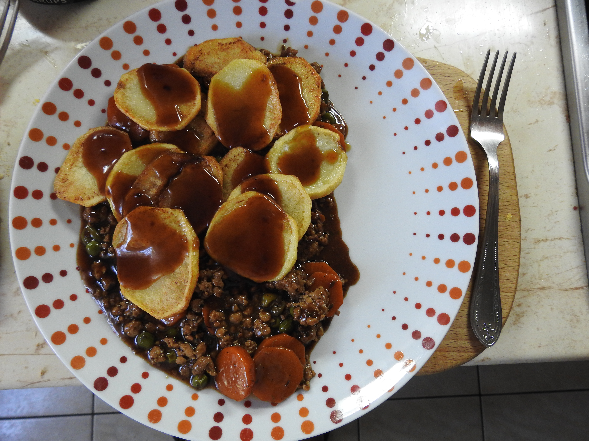

Angol

Almás Sertésragu
Apple Pork Casserole

Carrot & Coriander Soup
Répa és Koriander Leves

Csirkés rétes

Fish and Chips

Gombás Csirke Batyu
Chicken Mushroom cobbler

Gombás Csirke Ragu
Chicken mushroom casserole

Gombás-Csirkés Pite
Mushroom chicken pie
Hot Pot

Kolbász hagymás mártással, pürével
Sausage in onion gravy with mash

Pásztor Pite
Cottage Pie

Sajtos Brokkolis tészta
Cheezy Broccoli Pasta

Sajtos Makaróni
Mac Cheese

Shepeard's Pie
Pásztor Pite

Sunday Roast

Tojásos Ragu
Breakfast Casserole